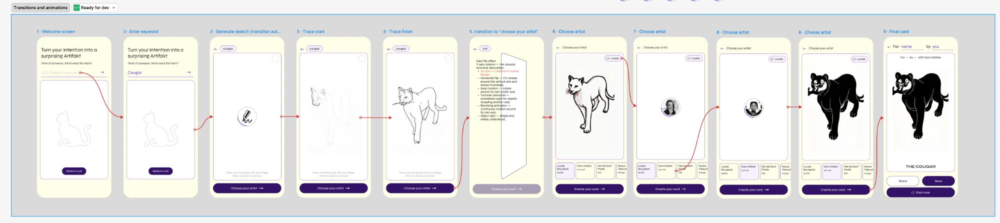
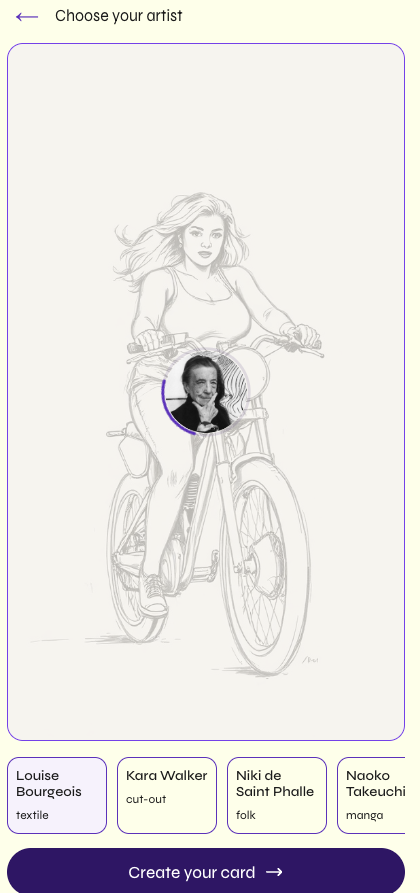
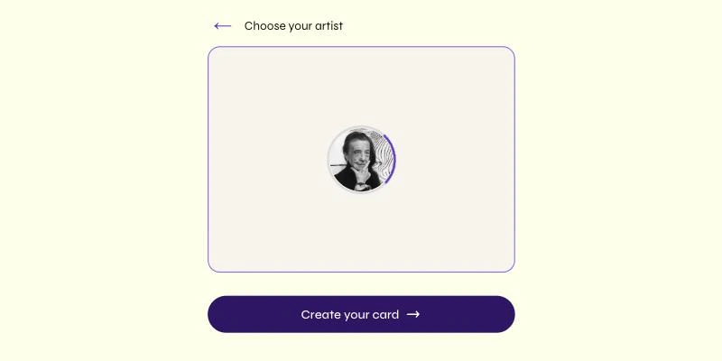
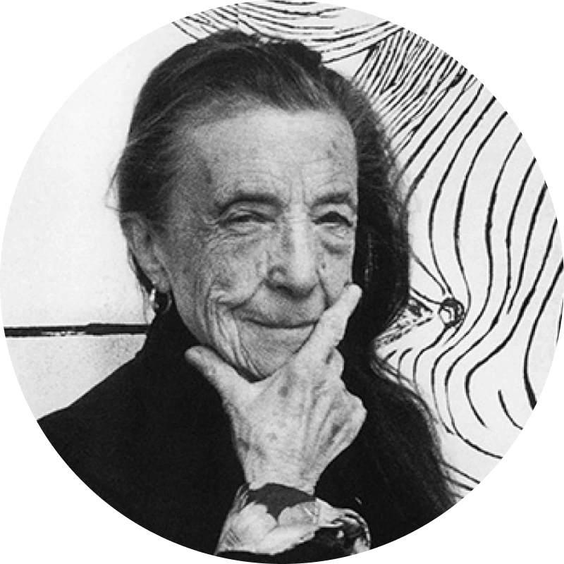
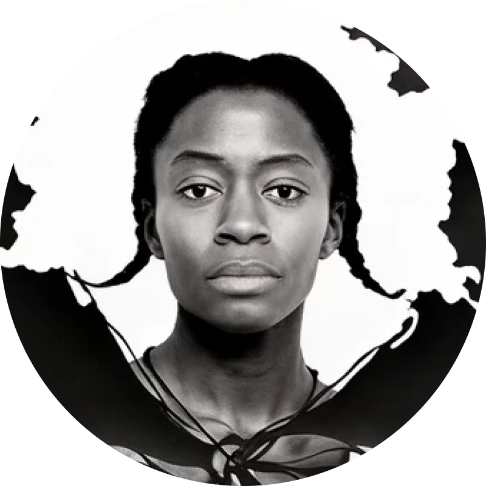
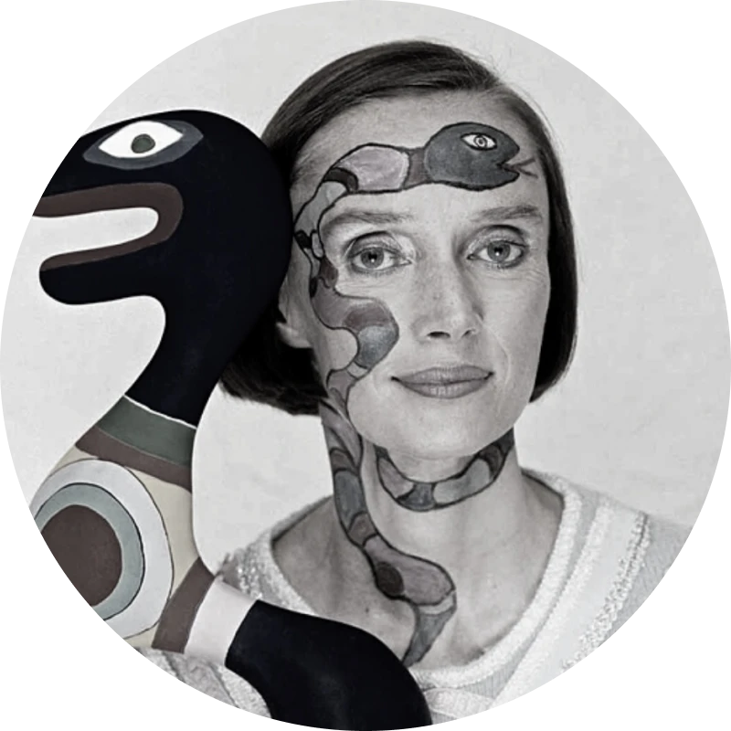
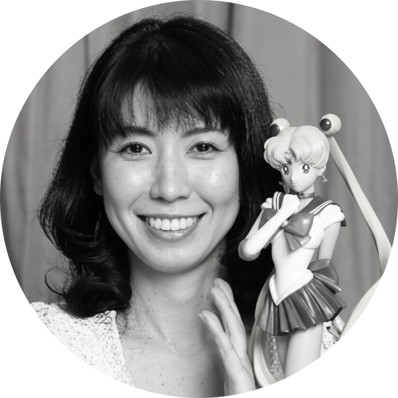
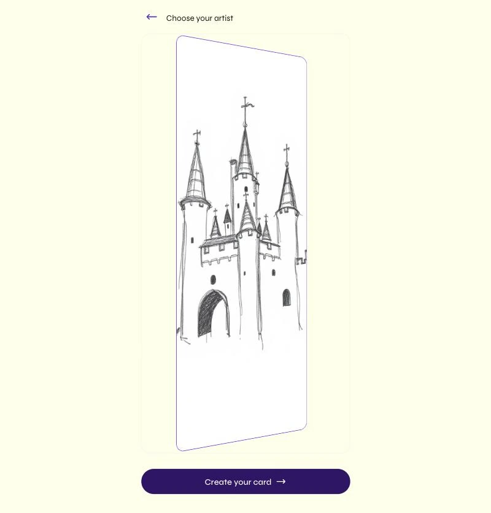

How the AI's waiting moments were designed. Artifakt calls an image model several times per session; rather than a generic spinner, each wait was turned into a small animation that shows what the AI is doing. This documents the three states, the design decisions behind them, and why they matter for trust. The demos below are the real CSS/SVG animations, running live. Last updated: June 2026.
00The idea — narrate, don't spin
Every time Artifakt calls the model there's a wait. The default answer is a spinner — but a spinner only says "something is happening." The brief, drawn from a Figma frame, was the opposite: show what the AI is doing. The flow has three distinct waits, and each became its own animation, mapped to the exact step it covers.

The brief. One Figma board mapping every screen and its transition — the pencil loader, the card-flip into “Choose your artist”, and the artist spinners. The annotations were essentially the to-do list.
Step
Keyword
"Think of someone."
→
Loader 01
Pencil draws
guide sketch generates
→
Step
Trace
draw over the guide
→
Loader 02
Spinning card
sketch → first artwork
→
Loader 03
Photo spinner
artist styles the piece
→
Step
Final card
share it
Principle
Loading is part of the product.
Replacing a generic spinner with a drawing-in-progress turns dead time into a small piece of the story — and quietly signals the AI is making something, by hand, the way an artist would. The wait stops being a void and starts being a preview of the craft.
01Pencil draws the line
Shown while the guide sketch generates on Screen 1. A pencil draws a line inside a ring with a sweeping purple arc — and crucially, the pencil's tip rides the leading edge of the stroke as it's drawn.
Live demo — the pencil's tip stays locked to the end of the line as it draws, loops, and redraws.
The pencil tip rides the leading edge of the stroke
The line and the pencil are driven by the same timing, with the pencil's path points sampled directly from the line. So the tip never floats off — it draws the line, rather than hovering near it.
Rebuilt from SMIL to pure CSS
First built with an SVG motion-path (animateMotion). The preview environment froze SMIL, so it was rebuilt as CSS keyframes with the path points baked in — tip alignment verified to sub-pixel across the whole draw.
Ring + sweeping arc = the shared loader shell
The grey track and the rotating purple arc are reused by the artist spinner (§02). One recognisable "generating" shell, a swappable centre.
02Artist-photo spinner
Shown while a chosen artist's style generates on Screen 2. The same ring + arc, but the centre is now the artist's portrait — captioned "Jujing it up…".
Jujing it up…
Live demo — placeholder portrait shown; in the app it's the selected artist's photo.
Clean canvas — before & after

Before. The AI guide sketch sat behind the spinner — busy, and it pulled focus from the artist.

After. Guide hidden during the wait — just the portrait spinner on a clean canvas, matching the Figma intent.
One shell, five faces

Louise Bourgeois

Kara Walker

Niki de Saint Phalle

Naoko TakeuchiKeith Haring
Same shell, different centre
A pencil for the sketch (§01), the artist's face for their style. One consistent signal across the whole app: when this shell appears, the AI is generating.
The copy: "Jujing it up…"
To juj (also spelled zhuzh) is to add flair, to fluff something up — drag- and queer-community phrasing that fits the project's values. An earlier draft named the artist ("Louise is jujing it up…"); dropped for simplicity.
Clean canvas during the wait
While the style generates, the AI guide sketch behind it is hidden — just the portrait spinner on an empty canvas. The focus is on who is about to make the piece, not a half-formed image.
03The spinning sketch-card
The heaviest wait is the jump from your traced sketch to the first styled artwork. Instead of a spinner, the canvas itself becomes a card that rotates continuously on its own axis until the artwork is ready — then settles. This is where most of the iteration went.
Live demo — light lines are the AI guide; the darker strokes are your trace; the purple outline is the canvas frame, all rotating together.
The iteration — sketch, not photo
First pass — wrong. The card spun the artist's photo. It should be your drawing, not their face.

Fixed. The card shows your sketch and traced strokes with the purple canvas outline — rotating as one, on the page yellow, never clipping.
It's the canvas, not a separate overlay
Sized to the Screen-2 canvas so nothing jumps; the rest of the screen stays visible behind it, inactive. The canvas appears to turn, rather than a popup arriving.
Double-faced, so it never blanks mid-spin
A single face would vanish edge-on at 90°. The sketch sits on both faces, so the image is always visible as it turns.
It carries your own work
The card shows the sketch and your traced strokes composited together, with the canvas's purple outline rotating with it — not a sketch spinning inside a static frame. You watch your drawing become art.
Stays inside the canvas, on a matching ground
Shrunk slightly so the 3D rotation never clips at the edges, and the background set to the page yellow (not the grey canvas colour) so there's no visible gap behind it.
One-time only, and it settles on arrival
It plays once — on "Choose your artist" — and stops the moment the first artwork loads, settling into the result. Later artist switches use the lighter photo spinner (§02), not another full spin.
Why it matters
Showing the user's own drawing turning in 3D ties the wait to authorship. You're not watching a machine think — you're watching your sketch be transformed. The loading state reinforces the core promise: by you, with the artist.
04One loading language
Across the three states, a few rules keep them feeling like one system rather than three separate effects.
Narrate the real step. Each animation depicts the actual thing being generated — a sketch, an artist's hand, your drawing transformed — never an abstract spinner.
One shell, swappable centre. The ring + sweeping purple arc unifies the two spinners; only the middle changes (pencil ⇄ portrait).
Motion locked to meaning. The pencil tracks the line as it draws; the card settles exactly when the artwork lands. The animation ends because the work is done, not on a timer.
Fail gracefully. If a generation errors, the loader resolves instead of spinning forever — a small but real trust detail.
On-brand throughout. Paper yellow, purple accent, ink — the loaders use the same tokens as the rest of the product.
05Open questions & next
A label for the spinning card. It currently has no text. On a long generation it can read as "is this stuck?" — a short, reassuring line (e.g. "Bringing in your artist…") trades visual calm for perceived responsiveness. worth testing both ways.
Speeds are hand-set. Pencil 2s, card 2.4s, arc 1.1s — tuned by eye on desktop; verify the feel against real generation times on-device.
Reduced motion. Offer a calmer fallback (a static or gently fading state) for users who prefer less animation. accessibility.